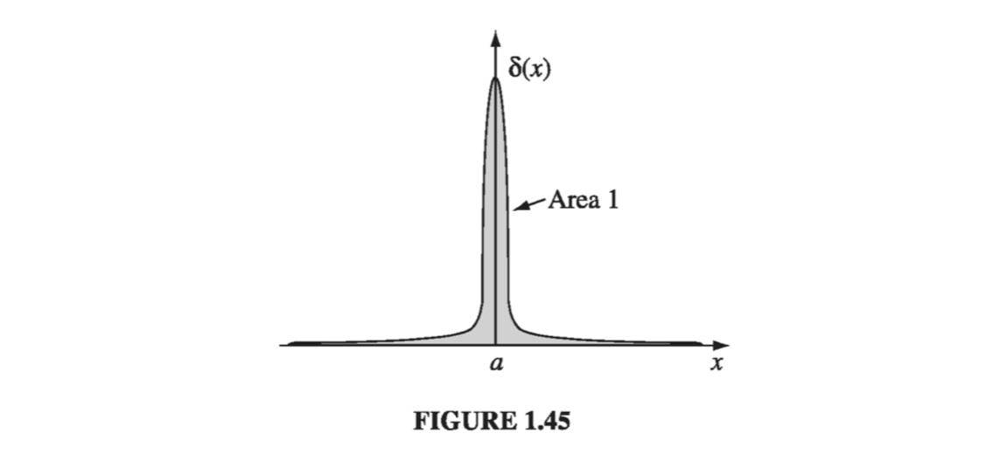

1.5: The Dirac Delta Function
1.5.1: The Divergence of
Consider the vector function

At every location, v is directed radially outward (Fig. 1.44); if ever there was a function that ought to have a large positive divergence, this is it. And yet, when you actually calculate the divergence (using Eq. 1.71), you get precisely zero:
(You will have encountered this paradox already, if you worked Prob. 1.16.) The plot thickens when we apply the divergence theorem to this function. Suppose we integrate over a sphere of radius R, centered at the origin (Prob. 1.38b); the surface integral is
But if we really believe , then the volume integral must be zero. What the heck is going on here??
The source of the problem is obviously the point , where v blows up (and where, in Eq. 1.84, we have unwittingly divided by zero). It is quite true that everywhere except the origin, but right at the origin the situation is more complicated. Notice that the surface integral (Eq. 1.85) is independent of R; if the divergence theorem is right (and it is), we should get for any sphere centered at the origin, no matter how small. Evidently the entire contribution must be coming from the point ! Thus, has the bizarre property that it vanishes everywhere except at one point, and yet its integral (over any volume containing that point) is . No ordinary function behaves like that. (On the other hand, a physical example does come to mind: the density (mass per unit volume) of a point particle. It's zero except at the exact location of the particle, and yet its integral is finite-namely, the mass of the particle.) What we have stumbled on is a mathematical object known to physicists as the Dirac delta function. It arises in many branches of theoretical physics. Moreover, the specific problem at hand (the divergence of the function ) is not just some arcane curiosity - it is, in fact, central to the whole theory of electrodynamics. So it is worthwhile to pause here and study the Dirac delta function with some care.
1.5.2: The One-Dimensional Dirac Delta Function
The one-dimensional Dirac delta function, , can be pictured as an infinitely high, infinitesimally narrow "spike," with area 1 (Fig 1.45). That is to say:
and

Technically, is not a function at all, since its value is not finite at x = 0; in the mathematical literature it is known as a generalized function, or distribution. It is, if you like, the limit of a sequence of functions, such as rectangles of height and width , or isosceles triangles of height and base (Fig 1.46)

If is some "ordinary" function (let's just say continuous, just to be safe), then the product is zero everywhere except at x = 0. It follows that
This is probably the most important fact about the delta function! Since the product is zero anyway except at x = 0, we may as well replace f(x) by the value it assumes at the origin. In particular,
Under an integral, then, the delta function "picks out" the value of f(x) at a particular point. Of course, the limits of integration need not be all space, as long as the origin is included. We can also shift the spike from x = 0 to some other point, x = a, as well (Fig 1.47)

Equation becomes
and generalizes to
Example 1.14
Evaluate the integral math \int_0 ^3 x^3 \delta(x-2) \dd xmath
Solution Easy peasy. The delta function picks out the value of at the point x = 2, so the integral is . Notice that if the limits of integration had not included x = 2, then the answer would be 0.
Although itself is not a legitimate function, integrals over are perfectly acceptable. In fact, it's best to think of the delta function as something that is always intended for use under an integral sign. In particular, two expressions involving delta functions are considered equal if
for all ("ordinary") functions f(x).
Example 1.15
Show that \delta(kx) = \frac{1}{|k||}\delta(x) where k is any (nonzero) constant. (In particular, )
Solution For an arbitrary test function f(x), consider the integral
Changing variables, we let so that and . If k is positive, the integration still runs from to , but if k is negative, then implies , and vice versa, so the order of the limits is reversed. Restoring the "proper" order costs a minus sign. Thus
(where here the lower signs apply when k is negative, and we account for this neatly by putting absolute value bars around the final k.) Under the integral sign, then, serves the same purpose as :
According to our criterion , therefore, and are equal.
The Three-Dimensional Delta Function
It is easy to generalize the delta function to three dimensions:
This three-dimensional delta function is zero everywhere except at (0, 0, 0), where it blows up. Its volume integral is 1.
And, generalizing
As in the one-dimensional case, integration with picks out the value of the function f at the location of the spike.
We are now in a position to resolve the paradox introduced in Sect. 1.5.1. As you will recall, we found that the divergence of is zero everywhere except at the origin, and yet its integral over any volume containing the origin is a constant (to wit: ). These are precisely the defining conditions for the Dirac delta function; evidently
More generally,
where, as always, is the separation vector . Note that differentiation here is with respect to , while is held constant. Incidentally, since
(from Problem 1.13), it follows that
Example 1.16
Evaluate the integral math J = \int_V (r^2 + 2) \div \left( \frac{\vu{r}}{r^2} \right) \dd \taumath where is a sphere of radius R centered at the origin.
Solution 1 Use to rewrite the divergence, and to do the integral:
This one-line solution demonstrates something of the power and beauty of the delta function, but I would like to show you a second method, which is much more cumbersome but serves to illustrate the method of integration by parts (Sect. 1.3.6).
Solution 2
Using Eq 1.59, we transfer the derivative from to
The gradient is
so the volume integral becomes
Meanwhile on the boundary of the sphere (where r = R)
so the surface integral is
which, all together makes
In proper mathematical jargon, "sphere" denotes the surface, and "ball" the volume it encloses. But physicists are (as usual) sloppy about this sort of thing, and I use the word "sphere" for both the surface and the volume. Where the meaning is not clear from the context, I will write "spherical surface" or "spherical volume." The language police tell me that the former is redundant and the latter an oxymoron, but a poll of my physics colleagues reveals that this is (for us) the standard usage.